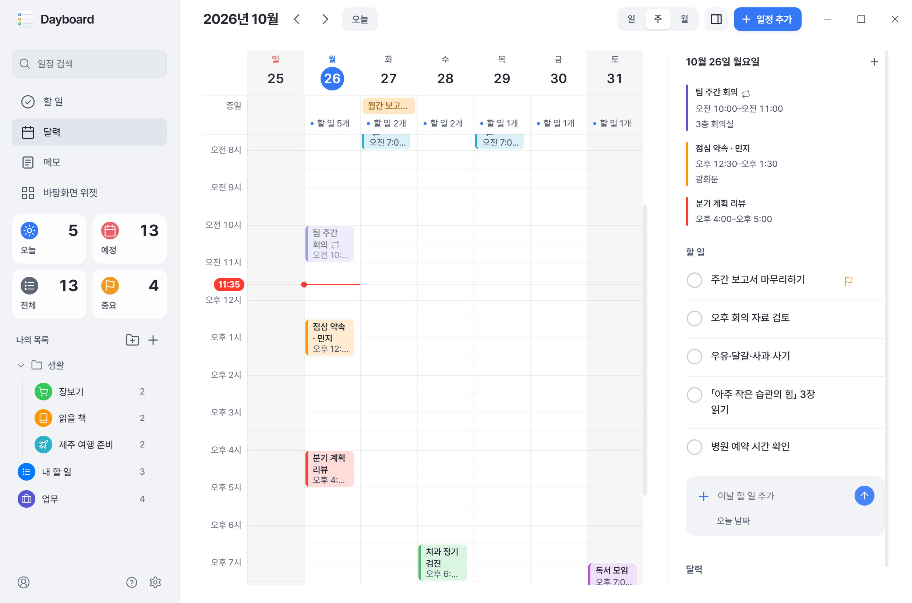

Dayboard
Windows 바탕화면에 두는 개인용 할 일·달력·메모 위젯 앱

무엇을 하는 앱인가
- 할 일 목록, 일·주·월 달력, 메모를 한 창에서 보고, 바탕화면 위젯으로 고정할 수 있음. 위젯은 Apple 리퀴드 글라스처럼 가장자리에서 바탕화면이 살짝 휘어 보이는 유리 카드이며, 어두운 바탕화면에서는 어두운 유리로 저절로 맞춰짐.
- Microsoft To Do·Outlook 달력, Google Tasks·Google 캘린더, iCloud 달력을 연결해 같은 할 일과 일정을 Windows에서 보고 고침. iCloud 미리 알림은 지원하지 않음.
- 일정은 끌어서 옮기거나 늘리고 옆에 뜨는 카드에서 바로 고침. 반복 일정, 일정별 색, 방금 한 일 되돌리기·다시 실행, 처음 여는 사람을 위한 둘러보기와 「?」 단축키 도움말이 있음.
- 메모는 Google 계정을 연결하면 Google 드라이브의 Dayboard 전용 숨은 폴더를 거쳐 내 다른 PC의 Dayboard와 맞춰짐(Google Keep 등 다른 앱에는 보이지 않음). 지운 메모는 「최근 삭제한 메모」에 30일 남고, 메모마다 이전 버전을 최대 10개 되살릴 수 있음.
- 개인이 만든 무료 앱이며 광고·회원 가입·서버가 없음. 데이터는 사용자 PC에 저장되고, 메모 동기화를 켰을 때만 그 Google 계정의 드라이브에도 보관됨.
내려받기
- 최신 릴리스에서
Dayboard-<버전>.exe를 내려받아 실행하면 관리자 권한 없이 설치되고 바로 시작됨. - 새 버전은 앱이 스스로 내려받아 두고, 설정에서 「지금 다시 시작해 적용」을 누를 때만 설치함. 버전별 변경 내용은 릴리스에 있음.
- 서명되지 않은 새 설치 파일이라 Windows 스마트 앱 컨트롤이 몇 분 동안 막을 수 있음. 잠시 뒤 다시 실행.
- 앱 소스 코드는 같은 저장소에 MIT 라이선스로 공개되어 있음(github.com/nowsummer/Dayboard).



화면의 할 일·일정·메모는 예시 데이터임.
Google 계정 연결에 대해
- 「Google 계정으로 로그인」을 누르면 Google의 공식 로그인 화면이 열리고, Dayboard는 Google Tasks(읽기·편집), Google 캘린더(읽기, 일정 추가·수정·삭제), Google 드라이브의 Dayboard 전용 앱 데이터 폴더(메모 동기화), 계정 이메일·프로필(계정 확인)만 요청함.
- 드라이브는 Dayboard만 쓰는 숨은 앱 데이터 폴더에만 접근하며 메모를 사용자의 다른 PC와 맞추는 데만 씀. 드라이브의 다른 파일은 보거나 바꾸지 않고, 앱의 「메모」 스위치로 끌 수 있음.
- 받은 데이터는 사용자 PC에 보관하고(로그인 정보는 Windows 암호화로 보호) 개발자나 제3자에게 보내지 않음. 자세한 내용은 개인정보처리방침 참조.
- 연결 해제는 앱의 「계정」 화면에서 하거나, Google 계정의 앱 권한 페이지에서 언제든 철회할 수 있음.